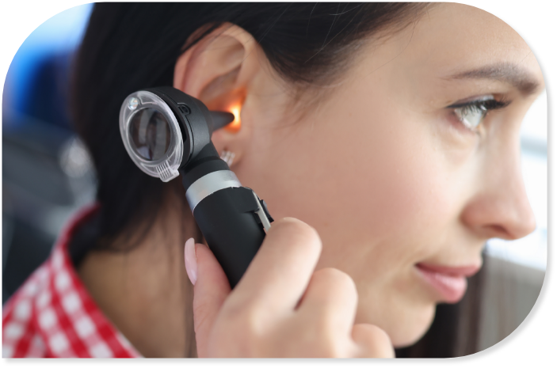

Correção do desvio de septo nasal e redução dos cornetos nasais
Essa cirurgia é realizada habitualmente em conjunto, quando há queixa de obstrução nasal e é evidenciada a presença de desvio e aumento dos cornetos nasais nas consultas. Objetiva-se melhorar a respiração nasal, melhorar a qualidade do sono e a qualidade de vida. Em alguns casos também pode ser útil para melhorar as crises de sinusite e dores de cabeça.
